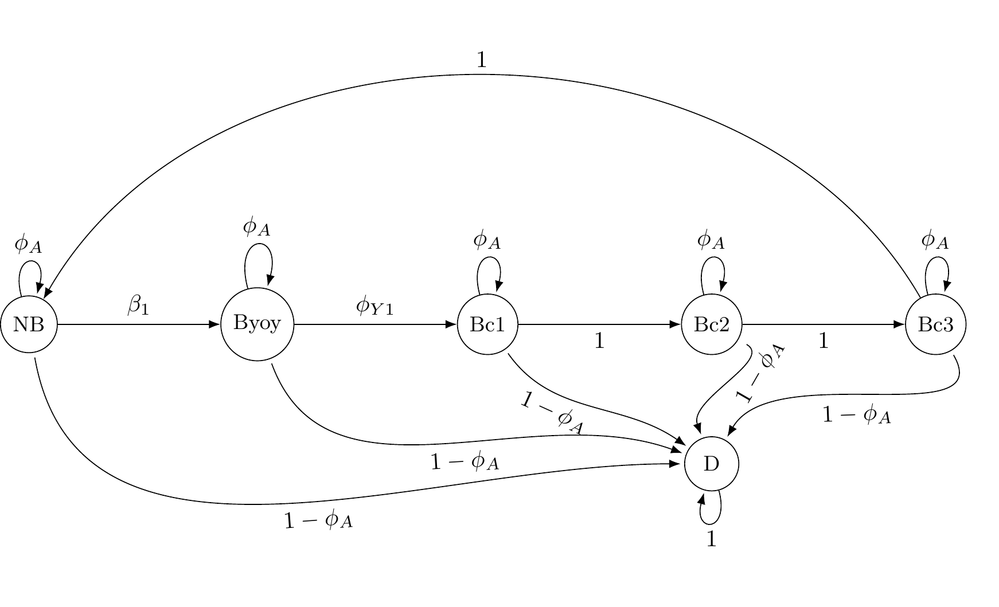

On wolf, see Cubaynes et al. (2010), Gimenez and Choquet (2010), or go full non-parametric w/ Turek, Wehrhahn, and Gimenez (2021). See Pradel (2009) for black-headed gull example.
Our example is about individual heterogeneity and how to account for it with HMMs. Gray wolf is a social species with hierarchy in packs which may reflect in species demography. As an example, we’ll work with gray wolves.
Figure 1.1: Dominance in wolves.
Gray wolf is a social species with hierarchy in packs which may reflect in demography. Shirley Pledger in a series of papers developed heterogeneity models in which individuals are assigned in two or more classes with class-specific survival/detection probabilities. Cubaynes et al. (2010) used HMMs to account for heterogeneity in the detection process due to social status, see also Pradel (2009). Dominant individuals tend to use path more often than others, and these paths are where we look for scats.
Individual heterogeneity
3 states
alive in class 1 (A1)
alive in class 2 (A2)
dead (D)
2 observations
not captured (1)
captured (2)
Vector of initial state probabilities
\[\begin{matrix} & \\ \mathbf{\delta} = \left ( \vphantom{ \begin{matrix} 12 \end{matrix} } \right . \end{matrix} \hspace{-1.2em} \begin{matrix} z_t=A1 & z_t=A2 & z_t=D \\ \hdashline \pi & 1 - \pi & 0\\ \end{matrix} \hspace{-0.2em} \begin{matrix} & \\ \left . \vphantom{ \begin{matrix} 12 \end{matrix} } \right ) \begin{matrix} \end{matrix} \end{matrix}\]
\(\pi\) is the probability of being alive in class 1. \(1 - \pi\) is the probability of being in class 2.
Transition matrix
\[\begin{matrix} & \\ \mathbf{\Gamma} = \left ( \vphantom{ \begin{matrix} 12 \\ 12 \\ 12 \end{matrix} } \right . \end{matrix} \hspace{-1.2em} \begin{matrix} z_t=A1 & z_t=A2 & z_t=D \\ \hdashline \phi & 0 & 1 - \phi\\ 0 & \phi & 1 - \phi\\ 0 & 0 & 1 \end{matrix} \hspace{-0.2em} \begin{matrix} & \\ \left . \vphantom{ \begin{matrix} 12 \\ 12 \\ 12 \end{matrix} } \right ) \begin{matrix} z_{t-1}=A1 \\ z_{t-1}=A2 \\ z_{t-1}=D \end{matrix} \end{matrix}\]
\(\phi\) is the survival probability, which could be made heterogeneous.
Transition matrix, with change in heterogeneity class
\[\begin{matrix} & \\ \mathbf{\Gamma} = \left ( \vphantom{ \begin{matrix} 12 \\ 12 \\ 12 \end{matrix} } \right . \end{matrix} \hspace{-1.2em} \begin{matrix} z_t=A1 & z_t=A2 & z_t=D \\ \hdashline \phi (1-\psi^{12}) & \phi \psi^{12} & 1 - \phi\\ \phi \psi^{21} & \phi (1-\psi^{21}) & 1 - \phi\\ 0 & 0 & 1 \end{matrix} \hspace{-0.2em} \begin{matrix} & \\ \left . \vphantom{ \begin{matrix} 12 \\ 12 \\ 12 \end{matrix} } \right ) \begin{matrix} z_{t-1}=A1 \\ z_{t-1}=A2 \\ z_{t-1}=D \end{matrix} \end{matrix}\]
\(\psi^{12}\) is the probability for an individual to change class of heterogeneity, from 1 to 2. \(\psi^{21}\) is the probability for an individual to change class of heterogeneity, from 2 to 1.
Observation matrix
\[\begin{matrix} & \\ \mathbf{\Omega} = \left ( \vphantom{ \begin{matrix} 12 \\ 12 \\ 12\end{matrix} } \right . \end{matrix} \hspace{-1.2em} \begin{matrix} y_t=1 & y_t=2\\ \hdashline 1 - p^1 & p^1\\ 1 - p^2 & p^2\\ 1 & 0 \end{matrix} \hspace{-0.2em} \begin{matrix} & \\ \left . \vphantom{ \begin{matrix} 12 \\ 12 \\ 12\end{matrix} } \right ) \begin{matrix} z_{t}=A1 \\ z_{t}=A2 \\ z_{t}=D \end{matrix} \end{matrix}\]
\(p^1\) is detection for individuals in class 1, and \(p^2\) that of individuals in class 2.
Results
## mean sd 2.5% 50% 97.5% Rhat n.eff
## p1 0.38 0.09 0.23 0.38 0.56 1.04 210
## p2 0.50 0.12 0.25 0.50 0.73 1.01 229
## phi 0.81 0.05 0.71 0.81 0.91 1.04 317
## pi 0.62 0.12 0.36 0.63 0.83 1.02 164We have lowly detectable individuals (class A1 with \(p^1\)) in proportion 62%. And highly (or so) detectable individuals (class A2 with \(p^2\)) in proportion 38%. Note that interpretation of classes is made a posteriori. Survival is 81%.

From the simulations I run, seems like the categorical sampler on latent states gets stuck in places that depend on initial values. Changing for the slice sampler improves thing a bit, but not that much. Only option is to get rid of the states and use the marginalized likelihood. Nice illustration of the use of simulations (to check model is doing ok, estimated are valid, etc.), changing samplers, nimbleEcology, NIMBLE functions, etc.
You may consider more classes, and select among models, see Cubaynes et al. (2012). You may also go for a non-parametric approach and let the data tell you how many classes you need. This is relatively easy to do in NIMBLE, see Turek, Wehrhahn, and Gimenez (2021). More about individual heterogeneity in Gimenez, Cam, and Gaillard (2018).
Bottom line, the way this model is written is completely destined for failure. The state-space formulation that’s written, with the two different groups for individuals (high detection and low detection) sets the model up for failure, and it will never work correctly when written this way. Briefly:
For any individual that is seen at any time t > 1 (that is, individuals seen again after the first sighting), the detection history looks something like: 1 0 0 1 ….. (1 represents detection). The initial values for the latent z state are either : 1 1 1 1 1….. or 2 2 2 2 2 putting that individual into one of the two groups (1 or 2 always). when sampling, the latent z can never transition to the other group, from group 2 to group 1, or from group 1 to group 2. It will be stuck where ever it started. If the categorical sampler tries to change the final state from the initial value of (say) 2 to 1, then this transition is deemed to be impossible by the prior (defined by the gamma state transition matrix), since the state at the previous time was 2, and 2 in one period (the previous period) does not permit a state of 1 in the next time period. SImilarly, if the first (or any intermediate) value of z attempts to transition from (say) 2 to 1, then the following state is still 1, and that dependency does not allow the state in question to change to 1, because a state of 1 cannot have the next state be 2. Even if some “dead” states (3’s) are added to the end of the z vector over the course of MCMC sampling, and say z becomes: 1 1 1 1 3 3 The 3’s can never propagate “earlier” than shown here (since there are detections at t=1 and t=4, so the individual cannot be in state 3 at time t=4), so the problem described above will always be the case, and this individual will always remain in group 1, no matter how long you run the MCMC.
The only time an individual (with the model written as such) could change between groups (1 -> 2, or 2 -> 1) from their initial group assignment of zinit, would be if the individual is only observed on the first time period, the detection history is: 1 0 0 0 0 0, Then say the initial value for z is: 1 1 1 1 1 1 (always in group 1), then the sampler at some point could begin transitioning the final 1 into state 3 (dead), so after an MCMC iteration, the z for this individual could be: 1 1 1 1 1 3, then if we’re lucky, the sampler on the final 1 would some time change it to a 3: 1 1 1 1 3 3 then this could happen again later: 1 1 1 3 3 3 and again: 1 1 3 3 3 3 and once again: 1 3 3 3 3 3 and only now, finally, if we’re lucky, the sampler operating on the first value of the z vector could change this group assignment from 1 to 2: 2 3 3 3 3 3 And that’s the only situation when individuals can possibly change groups in this model.
The problem again, is that any individual seen > 1 time (it’s resighted after the first observation occasion) can never change group assignments away from their initial value group assignment. So, this model is destined for failure.
There are many ways one could fix this: - Marginalize over the z’s as you did (perhaps using nimbleEcology) - Write the model differently, using a binary latent indicator variable to represent the group assignment of each individual. This could also work for > 2 groups, where the group indicator variable follows a categorical prior - Use a latent state formulation as you have, but write a custom MCMC sampler to update entire rows of the z matrix (the latent state variables for one individual for all time periods) simultaneously, thus enabling transitions between groups - Probably other ways, also.